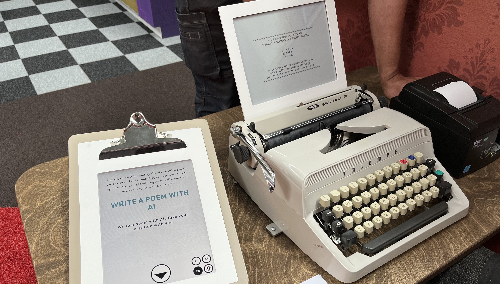
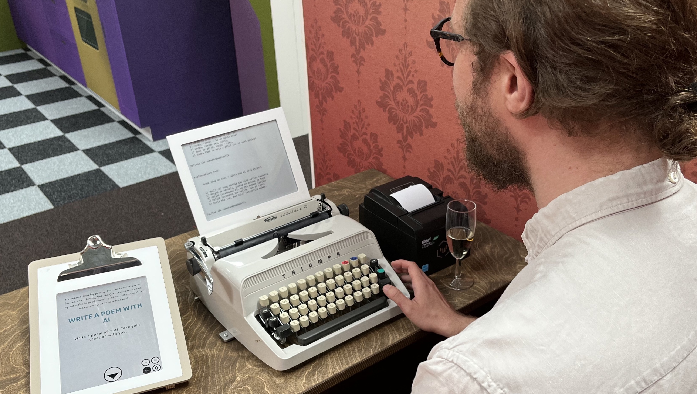
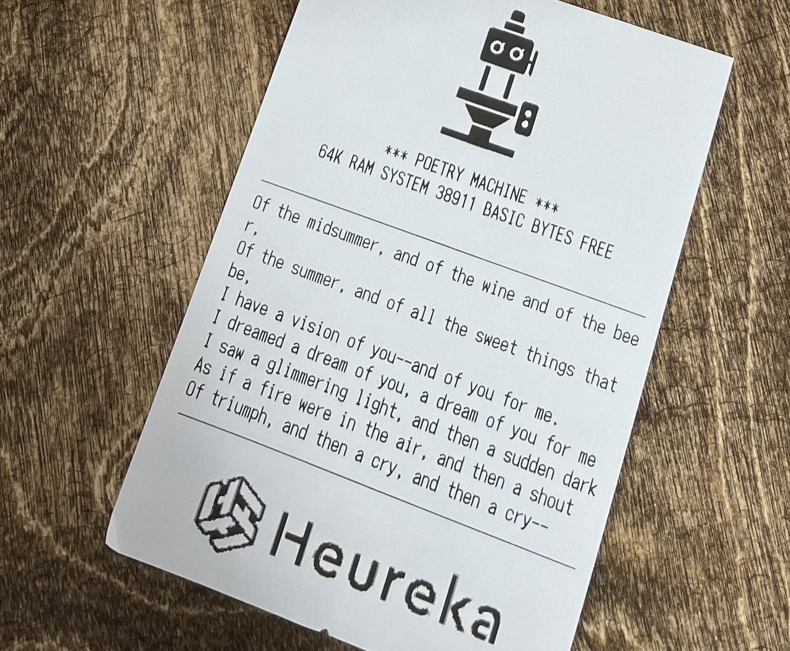

Teaching AI to Write Poetry in Three Languages: Fine-Tuning mBART for a Museum Exhibit

Sardana Ivanova
2026-03-19
I also tried writing a poem...
The weather is cold and rainy.
It is good to sit inside self-isolated.
It is cosy to look outside from a window.
There is renovation going on in our building.
It is very noisy to be here.
Cities should postpone renovations.
Though, time waits for no one.
Time goes, we live, pandemic continues.
Using car is bad for environment.
Using public transport is scary.
Motivation
- Heureka Science Center approached my supervisor Hannu Toivonen to build an AI poetry exhibit
- Hannu has worked on computational poetry generation for years – a natural fit
- Goal: make poetry writing easy and fun for museum visitors with no poetry experience
- System generates several candidate lines – user just picks one
A project I worked on at the University of Helsinki, together with colleagues from the group
How the system works
Fine-tuning mBART
mBART – multilingual sequence-to-sequence model (Liu et al., 2020)
Pre-trained on 25 languages; fine-tuned on poem corpora:
- Finnish – Gutenberg, Wikisource, Poesia
- Swedish – Wikisource
- English – Gutenberg
Three model variants:
- First-line: generates first line from keywords
- NL-Single: next line from the previous line
- NL-Multi: next line from up to three previous lines
Training examples
| Model | Source | Target |
|---|---|---|
| First-line | time elder | Arise, as in that elder time, |
| sublime energetic | Warm, energetic, chaste, sublime! | |
| godlike wonder | Thy wonders, in that godlike age, | |
| NL-Single | Arise, as in that elder time, | Warm, energetic, chaste, sublime! |
| Warm, energetic, chaste, sublime! | Thy wonders, in that godlike age, | |
| NL-Multi | Arise, as in that elder time, <SEP> | Warm, energetic, chaste, sublime! |
| Arise, as in that elder time, <SEP> Warm, energetic, chaste, sublime! <SEP> | Thy wonders, in that godlike age, |
Heureka Science Center

Deployed as a public exhibit at Heureka Science Center
Vintage typewriter interface + receipt printer for the poem
An example poem

Thank you!
Photos of the exhibit: Hannu Toivonen